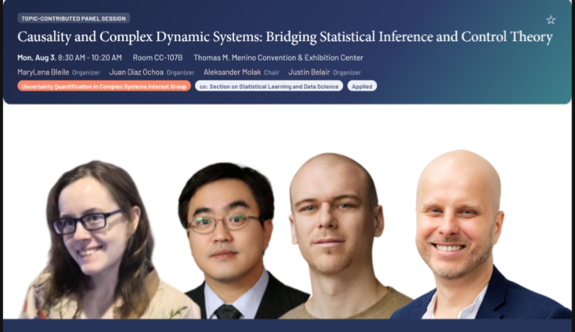

About This Book
Optimal Control Using Causal Agents is a translation manual between Causal Inference and Reinforcement Learning, written for researchers and practitioners already familiar with either Causal Inference or Reinforcement Learning. The book uses R and Python for implementation.
Optimal Control Using Causal Agents is a rosetta stone, not a comprehensive textbook (see the Causal AI book developed by Bareinboim, et. al. for that). In short, Optimal Control Using Causal Agents builds bridges between existing concepts instead of constructing concepts from the ground up. The goal is for causal inference practitioners to gain instant access to reinforcement learning's computational tools by seeing how these tools share ideas with their causal methods, and vice versa. The result is a practical guide for navigating 70 years of parallel mathematical development that has been artificially separated by academic boundaries. Perhaps the most important contribution is a comprehensive translation table which creates a map between notational conventions in both fields.
Publisher: CRC Press
Expected Publication: Spring 2027
Series: Chapman & Hall/CRC Press
Editor: Lara Spieker
Recognition: The author and book were both named as finalists in Aleksander Molak's Best of Causality 2025 community survey, in the Person of the Year and Best New Book categories, respectively.
Table of Contents
Part II: Foundations: Causal Inference
Part III: Foundation and Empire: Bridges From Reinforcement Learning to Causal Inference
Tour Dates

Resources
Below are some resources and other relevant work readers may wish to explore. This is not by any means an exhaustive list, but may serve as a starting point for those interested in the topic.
For Practitioners
If you're looking to apply causal inference methods in practice, particularly in healthcare and real-world evidence settings, these resources are excellent starting points:
- TAO RWD Causal Roadmap Tool: An interactive tool developed by Andrew Wilson, Aimee Harrison and colleagues that guides practitioners through the Causal Roadmap framework for real-world data studies, including target trial emulation and causal inference methodology selection. I have had the pleasure to contribute some ideas to this, and continue to be engaged in discussions for its development.
- Justin Bélair : A biostatistician and educator offering training in causal inference and biostatistics. His forthcoming book Causal Inference in Statistics (with exercises, practice projects, and R/Python code notebooks) takes a theory-in-practice approach that bridges the Rubin and Pearl frameworks. He also hosts a podcast on statistics and causal inference topics, and teaches a biostatistics course oriented towards industry professionals.
- Aleksander Molak / CausalPython.io : Author of the best-selling Causal Inference and Discovery in Python (Packt, 2023) and host of the Causal Bandits Podcast, which features interviews with leading researchers including Judea Pearl, Bernhard Schölkopf, and Amit Sharma. Molak also publishes a popular weekly newsletter on causality at CausalPython.io.
For Those With More Mathematical Background
For readers seeking comprehensive theoretical treatments of causal AI and complex systems:
- Causal Artificial Intelligence by Elias Bareinboim : A comprehensive textbook covering the principles, algorithms, and tools for building causally intelligent systems. It bridges probability theory, causal inference, machine learning, and decision-making under uncertainty, providing a unified roadmap for the field. Topics include causal reinforcement learning, fairness analysis, transportability, and causal generative modeling. Free draft available online.
- Complexity Measurements and Causation for Dynamic Complex Systems by Juan Guillermo Diaz Ochoa (Springer, 2025) : Examines problems of causal determinism in systems theory and analyzes complexity measures in relation to systems' autonomy and variability for causal inference. Relevant for those interested in the philosophical foundations of causality in complex systems, particularly biological systems and teleonomy.